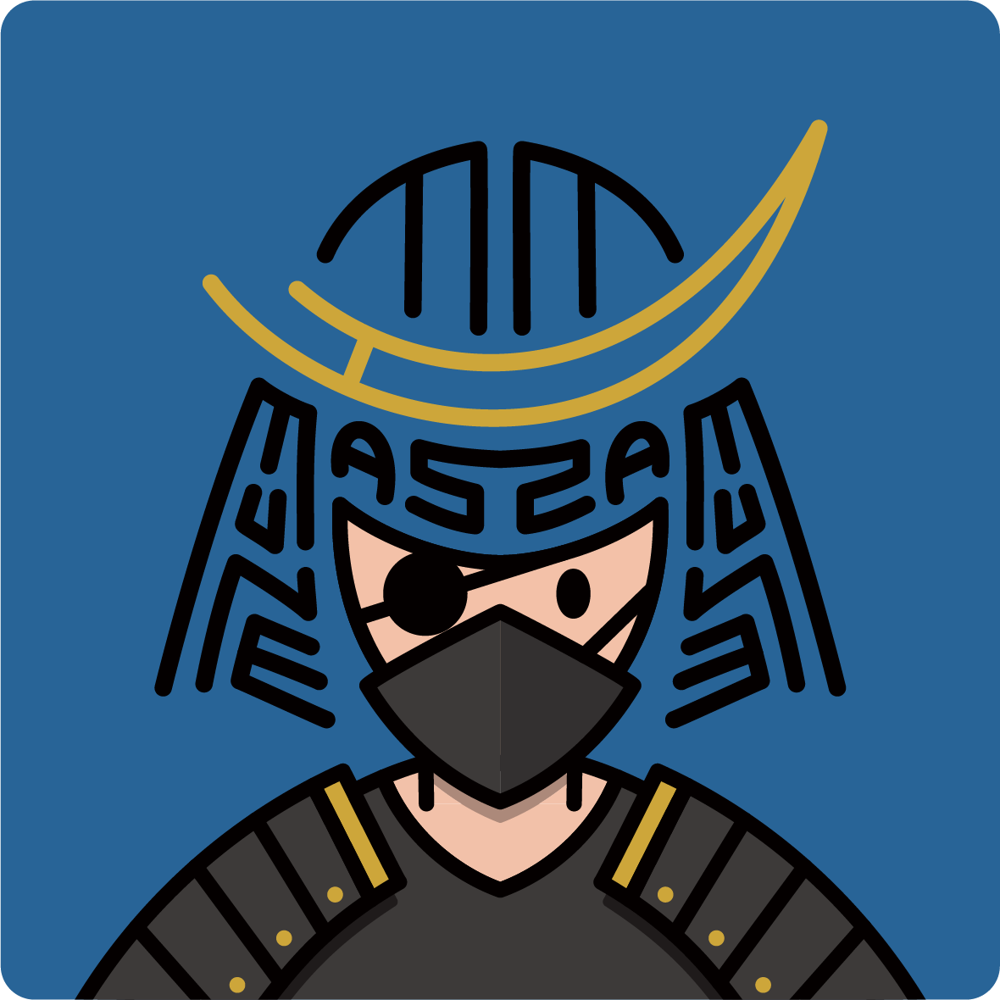
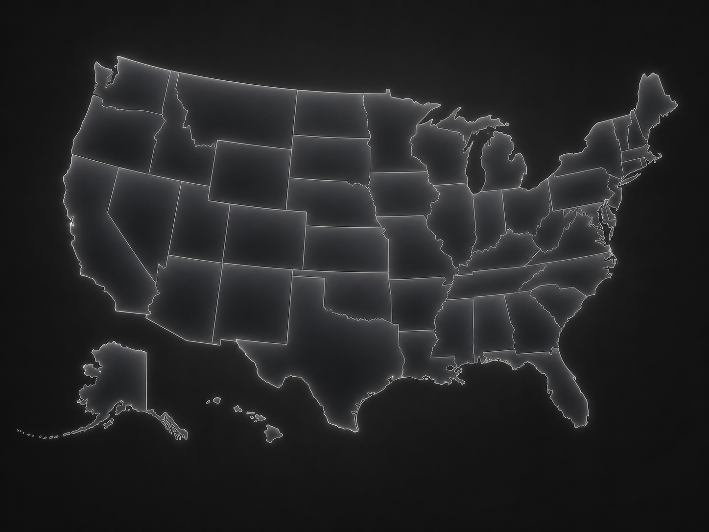
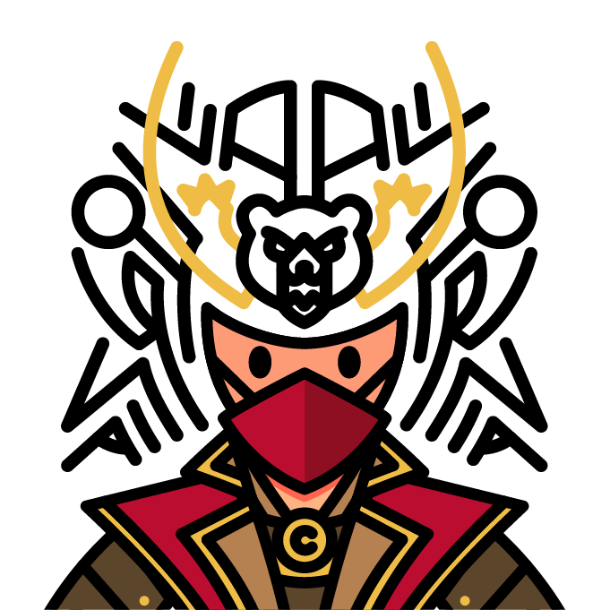

秋葉原
AKIHABARA
侍の兜は、時代と共に武将たちの威厳や個性を表現する存在へと変化していきました。
LIVINGLYPHでは、その思想をヒントに、タイポグラフィと日本の侍魂を融合。
文字を通して自己表現を行い、日本の文化を世界に伝えるサムライアートを発信してゆく。


SAMURAI ART MAP
地域の名前や文化をもとに、世界各地のSAMURAI ARTを展開していくプロジェクトです。

CALIFORNIA / USA

CALIFORNIA の自由な空気、ストリートカルチャー、そして西海岸の開放感をもとに制作した SAMURAI ART。
地域名を文字の造形として再構成し、ひとつのサムライ像として描いています。
A SAMURAI ART piece inspired by CALIFORNIA’s free spirit, street culture, and West Coast openness.
The regional identity is reconstructed through typography and shaped into a single samurai figure.